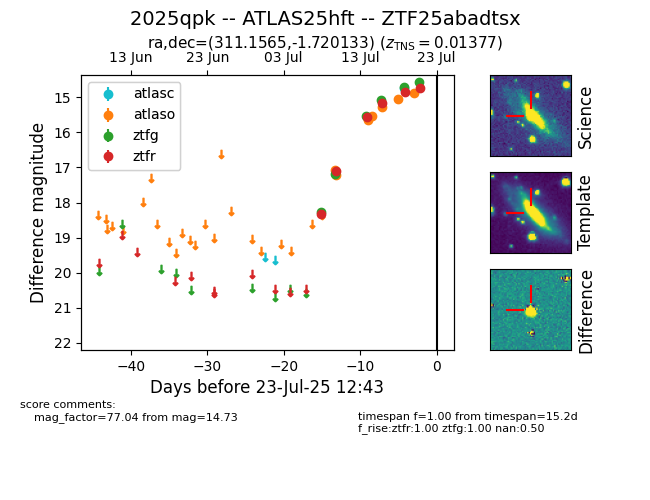

Target ZTF25abadtsx at 2025-07-23 12:43, see:
FINK: fink-portal.org/ZTF25abadtsx
Lasair: lasair-ztf.lsst.ac.uk/objects/ZTF25abadtsx
ALeRCE: alerce.online/object/ZTF25abadtsx
TNS: wis-tns.org/object/2025qpk
YSE: ziggy.ucolick.org/yse/transient_detail/2025qpk
alt names
ZTF25abadtsx (ztf,fink)
2025qpk (tns,yse)
ATLAS25hft (atlas)
coordinates:
equatorial (ra, dec) = (311.1565,-1.72013)
galactic (l, b) = (45.0733,-25.81009)
photometry
last atlasc=14.75, atlaso=14.88, ztfg=14.57, ztfr=14.73
1 atlasc, 7 atlaso, 6 ztfg, 6 ztfr detections
